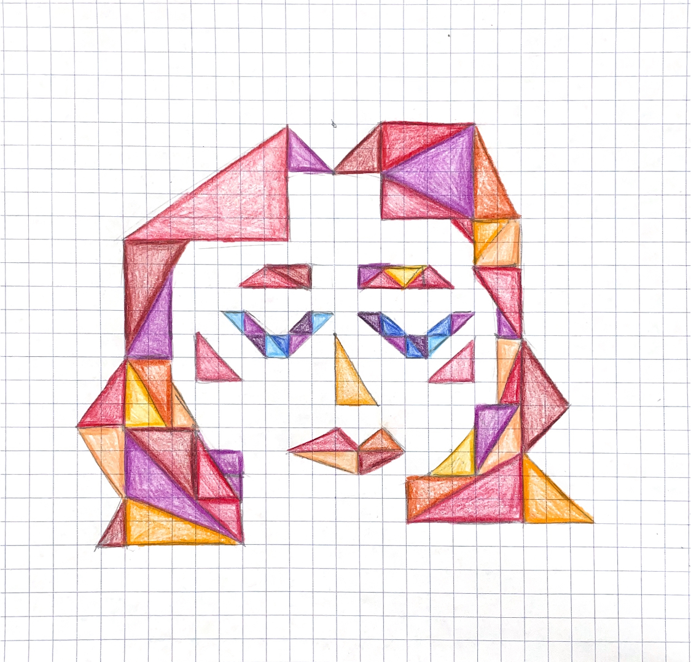

Next
Next
Think that snow is falling.
Think that snow is falling everywhere all the time.
When you talk with a person, think that snow is falling between you and on the person.
Stop conversing when you think the person is covered by snow.
Interactivity 1: A portrait of myself on gridded paper using only triangle shapes.
Triangles of different dimensions have been put in the approximate positions of facial features from memory.
Reds, oranges, blues and purples have been allocated randomly.
Interactivity 2: @Anatomy of a p5 sketch.
1: Basic p5 set up. 2: Basic sketch/circle drawing set up. 3:The sketch.
Interactivity 3: A portrait in code!
Made using triangles and circles in p5.js. *I cannot for the life of me work out how to center this in the page.